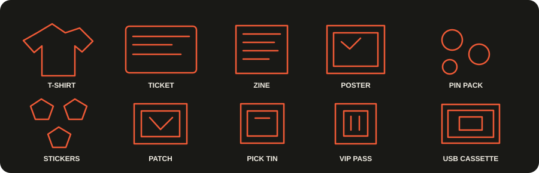
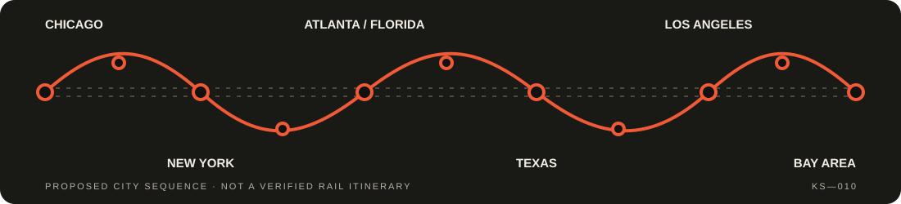

Private acoustic set
A customized 30-minute, one-on-one performance at an agreed location.
COAST-TO-COAST / AMTRAK EDITION
1 person per set. 10 sets per city. Times 10 cities.
Your living room, backyard, rooftop, or favorite spot. A personal 30-minute acoustic set from Kaiser Solzie — up close, unplugged, and made for you.
Ticket: $10 · November 9–20, 2026.

PUNCH YOUR TICKET / 01
Not a crowd. Not a stage barrier. Just you, Kaiser, and thirty minutes of songs and stories in a place that means something to you.
A customized 30-minute, one-on-one performance at an agreed location.
A recording of your personal session, delivered after the performance.
Tour T-shirt · Personalized ticket · Zine · Poster · Pin pack · Sticker pack · Patch · Pick tin · VIP pass · USB cassette.

The $10 ticket and included items are the proposed tour offer. Final terms, fulfillment, and booking availability will be confirmed before payments are accepted.
THE RAIL PASS DASH / 02
A coast-to-coast run built around rail travel, close-up performances, and the people who make a place feel like home.
November 9–20, 2026 is the locked date range for this tour. Set times within each city day, travel logistics, and set availability are still to be confirmed before payments are accepted.

FROM YOUR SPOT TO SHOWTIME / 03
Share your city, a possible location — living room, backyard, rooftop, or workplace — and the kind of set you have in mind.
We’ll review location, timing, accessibility, and rail/transit logistics together. A request is not a confirmed reservation.
Final price, payment method, schedule, and what’s included will be confirmed in writing before any payment is requested.
When the route and booking are confirmed, Kaiser brings the songs — and the one-person audience gets the front row.
BEFORE THE KNOCK AT YOUR DOOR / 04
DIY punk rock and acoustic sessions from basements, backyards, and everywhere in between.
Listen to the acoustic album ↗THIS ONE’S FOR FRIENDS AND FAMILY
ACOUSTIC TALES OF YEARSTHE BACK STORY / 05
Before the knock at your door, see the archive clip and hear the acoustic songs — the DIY punk, Warped Tour, and Rochester back story behind the 10 by 10 sets.
ARCHIVE CLIP
STREAMING VIDEO · AUDIO PLAYS IN THE PLAYER ABOVEORIGINAL ARTWORK
These are Kaiser's original 10by10 posters, updated with a locked-dates banner: November 9–20, 2026. The original artwork underneath is unchanged — any Nov 2–15 dates still printed inside the posters themselves are superseded by that banner and by this page's route list.
Tap any poster to open it full-size. Poster "Book Now" text is artwork only — booking on this page is requests only, with no payment collected here.
KEEP YOUR EYES ON THE TRACKS / 05
November 9–20, 2026 is the locked date range. Pick your city below to see its booking steps. A request is not a confirmed reservation, and no payment is collected on this page until the set is confirmed in writing.
Choose your city:
This builds a request summary on this page only. It is not sent, booked, or paid for here. A set is confirmed only in writing, after timing and transit are checked — and no payment is requested until then.